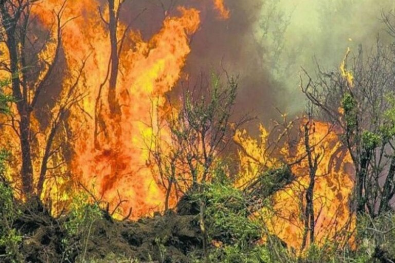

"Vengo a apagar un incendio" Declaró Aníbal Fernandez
"Vengo a apagar un incendio" siempre picante, el flamante ministro de Desarrollo Productivo de la Nación Anibal Fernandez ironizó respecto a las circunstancias de su designación. Dejó en claro que cualquier problema en el ministerio, o en la efectividad de las políticas de producción de la nación serían culpa de otro, y que él todavía no tuvo tiempo ni de desayunar.